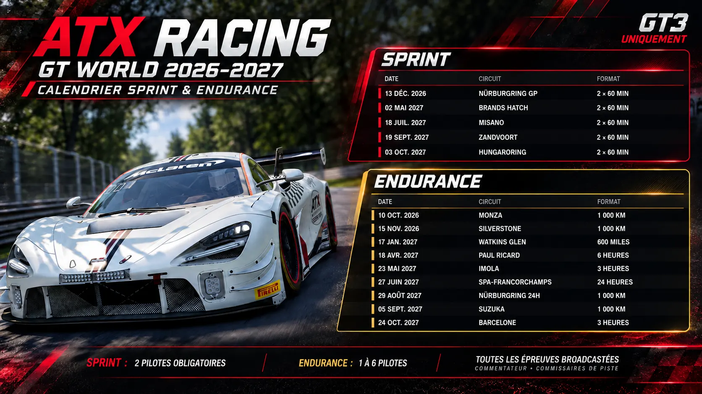

Zwei Fahrer pro Team · ein Pflichtstopp, Boxengasse während des gesamten Rennens geöffnet · Fahrerwechsel vorgeschrieben · maximal 35 Minuten pro Fahrer und Stint · Reifenwechsel und Tanken freiwillig.
ATX RACING · WGT
WorldGT — Saison 1
WorldGT ist die GT3-Meisterschaft von ATX Racing. Sie orientiert sich an offiziellen GT3-Wettbewerben und berücksichtigt die Strecken von Assetto Corsa Competizione sowie die Rennformate unserer Liga. Sprint und Endurance bilden eine gemeinsame Saison mit einem Kalender, Ergebnissen und einer Gesamtwertung.

Punktesystem
P150pts
P236pts
P330pts
P424pts
P520pts
P616pts
P712pts
P88pts
P94pts
P102pts
Schnellste Runde+2 pts
Ein bis sechs Fahrer pro Team · Renndauer je nach Veranstaltung · maximal 45 Minuten pro Fahrer und Stint · freie Reifen- und Tankstrategie.
Sprint und Endurance teilen sich einen Kalender, gemeinsame Ergebnisse und eine Gesamtwertung.
WGT · KALENDER
WorldGT-Kalender
Nächste Veranstaltungen werden geladen…
WGT · ERGEBNISSE
WorldGT-Wertung
Meisterschaft wird geladen…
| # | Team | Punkte | Läufe | Siege | Podestplätze | Sprint | Endurance | Schnellste Runden |
|---|
Läufe
Meisterschaftsverlauf
ATX // WORLDGT · FAHRERLEISTUNG
Fahrerpunkte
Rookie · 106%+Pro · 104–105.99%Elite · 102–103.99%Alien · 100–101.99%
Wird geladen…
| # | Fahrer | Punkte | Rennen | Siege | Podestplätze | Tempo und Entwicklung | SAFE |
|---|